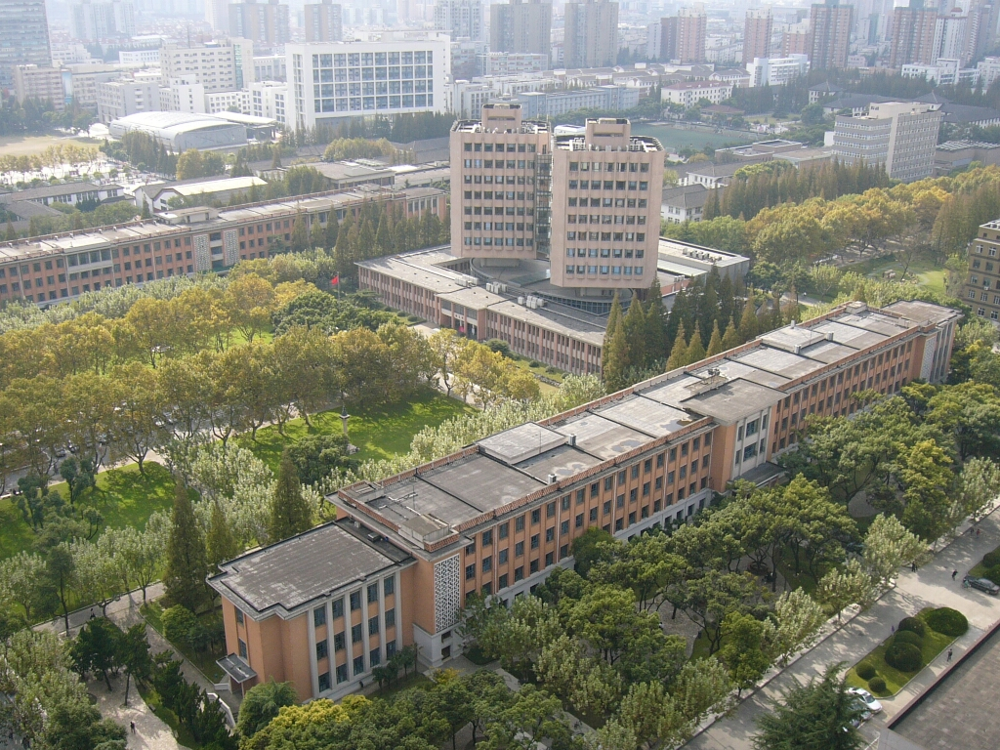
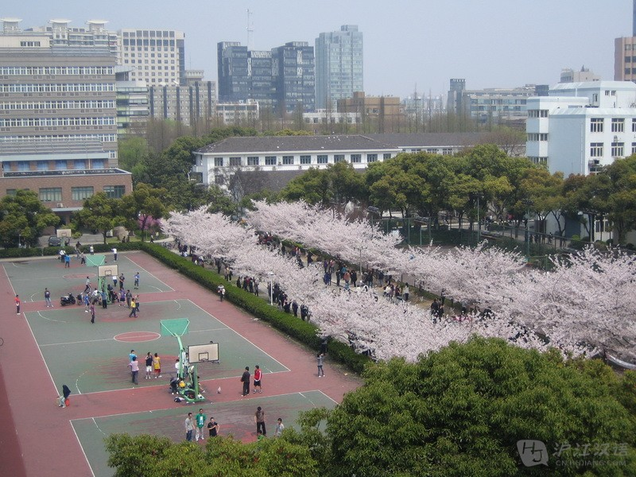

<div>
<!-- *****************************************************************************************************************
	 ABOUT ME
	 ***************************************************************************************************************** -->

	 <div class="container mtb">
	 	<div class="row">
	 		<div class="col-lg-6">
	 			<div style="padding-bottom: 20%">
	 				
	 			</div>
	 			<div>
	 				
	 			</div>
	 		</div>
	 		
	 		<div class="col-lg-6">
	 			<h4>Circle in a Square</h4>
	 			<p>Tongji University. This is the place where I spent my college years. In this university, I grew from a young and stupid kid to a young but not so stupid adult. In four years, besides Electrodynamics, Quantum Mechanics, Statistic and Thermaldynamics, Analytical Mechanics, and supporting math and physics courses and practice courses, I led a small team replicating and improving synthesizing process of Sulfade based aerogel as well as researching on its mechanical, electrical and photoluminescence characteristics. And it was the time I started serious reading on history and philosophies. It was four years all about hardworking, curiosity, firm and sound mathematical and logical training.</p>
	 			<p>In this university, I fist realized that ther is no such thing as too hard to get done. Yes, there are hard things. There are impossible things. But as long as it is a possible thing, it could be done. All it matters is how much you want to do it. How much effort you are willing to put in it. And correct timing. That's it. The first thing are what I could control. The last thing called luck. Yes, luck is important. But hey, I am a lucky guy. I do my best, and normally, it will be good. Guaranteed. This is the place and time period I realized that whatever happend, analyze it. Don't panic, calm down. Don't make it personal, regardless how personal it might be, put that aside. Andlyze it as a event, as my research. Find what I did wrong. Find what I could do better. And learn the lesson. Learn the environment, learn what factors besides myself had impacts on it. Understand how and why. Then learn how to make right use of what I learned. That's the way I think works for me in making myself a better person.</p>
	 			<p>The university itself is one of the oldest and best 39 universities in the entire mainland China (there are over 1500 universities and colleges in mainland China). Main campus locates in downtown Shanghai, China. It is a beautiful campus. Quiet, designed, and more or less hidden in the crowded and noisy city. There is a road, with beautiful sakuras on both sides. It might be the most romantic view in this tech and engineering heavy university. Students may seem nerdy as most of them are tech or engineer majored and care more about their courses and researches, we are warm-hearted and romatic in one way or another.</p>
	 	</div><! --/row -->
	 </div><! --/container -->
</div>
</div>
